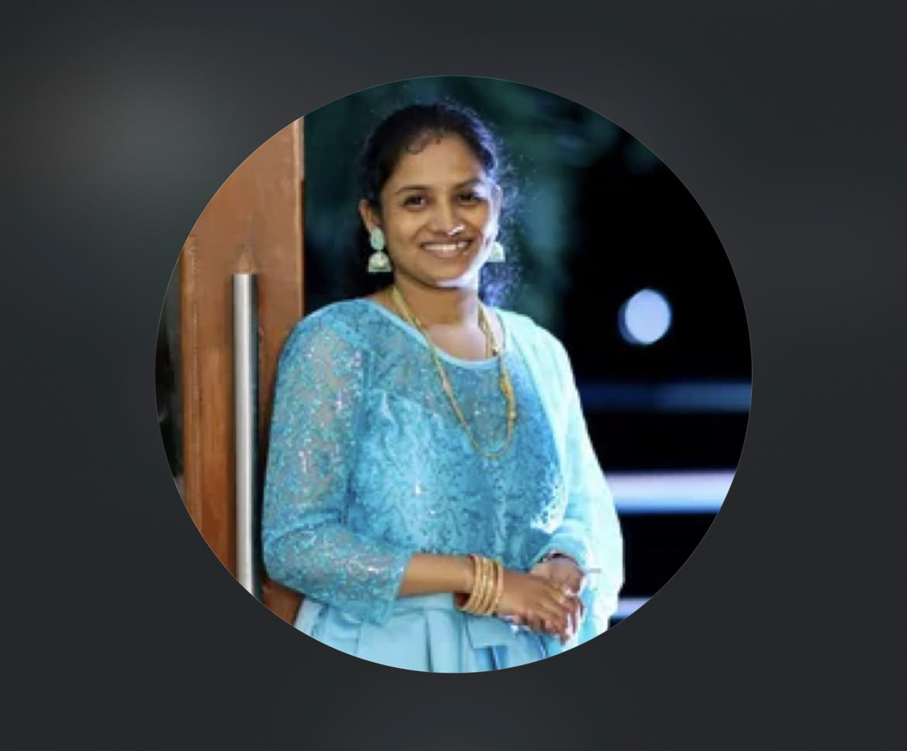

hi, it's Ruba — Happy Birthday to one of the most special people in my life!❤️🌸
One day, I started thinking about our friendship and everything we’ve experienced together. Sometimes, two people who genuinely care about each other end up hurting each other through misunderstandings, unspoken feelings, and assumptions.
There have been moments when I’ve wondered, “Are we going to be okay after this?” Not because our friendship means nothing, but because it means so much to me that the thought of things changing between us hurts.
I know I’ve made mistakes, and I may have hurt you without intending to. I’m learning that my intentions aren’t everything; your feelings matter too. I want to understand where I’ve gone wrong, listen to you, and become better at handling our friendship.
I know I sometimes overthink, make assumptions, and let my emotions speak louder than my understanding. I’m not saying this to justify my actions. I genuinely want to learn from my mistakes and communicate with you more maturely.
Mythu, I don’t expect our friendship to be perfect. I want it to be honest, understanding, and peaceful. We don’t have to agree on everything, but I hope we can respect each other’s feelings, apologise sincerely, and learn from our mistakes.
If I’ve hurt you, please tell me. If I’m wrong, correct me. You can scold me, shout at me, argue with me, and even beat me 😂, but please don’t go silent without giving us a chance to talk things through. I’d rather have an uncomfortable conversation with you than let misunderstandings grow between us.
If either of us needs time to calm down, that’s okay. We can take that time and talk when we’re ready. I just hope we’ll always come back to each other and resolve things with understanding.
One thing Mythu, ❤️ I wish for this from the bottom of my heart: whenever a problem comes between us, let’s face it together instead of allowing it to come between us. If something heavy is weighing on your heart, I hope you’ll feel comfortable sharing it with me whenever you want to. Whatever it may be, please remember that you don’t have to carry everything alone. 🫂❤️
If you agree with this and genuinely feel the same way, could you please send me just one word on WhatsApp: “Yes” 🥹❤️ I promise I won’t keep asking you for the same reassurance again. I want to learn to trust your words, respect your feelings, and let our actions build the understanding we both deserve. ❤️♾️
I’m also learning to trust your words instead of allowing my overthinking to create unnecessary doubts. I understand that you have your own life, responsibilities, and feelings. I don’t want my fear of losing this friendship to become a burden for you. I want to respect your space while learning to express my feelings in a healthier way.
I'm not grateful that we hurt each other, but I am grateful for what happened afterward. We listened, apologised, and made changes. Our friendship became more honest because we learned that we could talk about the difficult parts of our relationship, too.
I value the memories we’ve shared, the conversations we’ve had, and the friendship we’ve built. Those moments mean a lot to me, and I hope we’ll continue creating beautiful memories together.
On your special day, I pray that God blesses you and your family with happiness, peace, good health, success, and countless blessings. May all your dreams come true, and may we create many more beautiful memories together♾️❤️
Thank you for being part of my life, Mythu. Let's carry the beautiful memories with us and remember the lessons that have helped us grow🥹💗
With lots of love and prayers, Your Best friend❤️🎂
you’re not just a friend in my life; you’re one of those rare people who have touched my heart in ways I could never fully explain, even if I spent my whole life trying.
You’ve become a part of my happiness, my precious memories, my prayers, that make my life feel more meaningful.
You’ve seen sides of me that I struggle to show others, and the bond I feel with you holds a special place in my heart that words can never completely describe.
I’d still be grateful to God for the day He brought you into my life, Mythu, because having you as my friend is a blessing I’ll always treasure, and be ready to slave to God for that